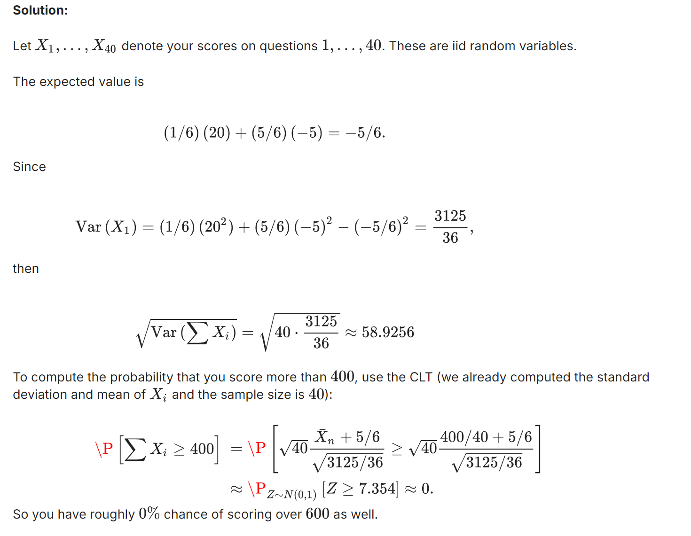

Two important probability tools
SAT
Up until 2015, the SAT had a “guessing penalty”. Consider an exam with 40 questions each with six possible choices. Only one is correct. Each correct answer is worth +20 points and each incorrect one is worth -5 points. Consider answering each question by rolling a six-sided die for each question and simply choosing the corresponding answer.
- What is your expected score for the first question?
[Hint: First write your score for this question as $aX+b$ where $X \sim \text {Ber}(p)$ for some numbers $a,b$ and $p$ to be determined.]
-
What is the standard deviation of your total score on the exam?
-
What is the probability that you score more than 400 points? Use the CLT.
-
What is the probability that you score more than 600 points? Use the CLT.

Formulations of CLT
Suppose that $ X_1, \ldots, X_n $ are i.i.d. with mean $\mu$ and variance $\sigma^2$. Which of the following are equivalent statements of the central limit theorem seen in class? (Choose all that apply.)
Options:
-
$\frac{\bar{X}_n - \mu}{\sigma} \to N \left( 0, \frac{\sigma^2}{n} \right)$ -
$\sqrt{n} \left( \frac{\bar{X}_n - \mu}{\sigma} \right) \to N(0, 1)$ -
$\frac{1}{\sqrt{n}} \sum_{i=1}^{n} (X_i - \mu) \to N(\mu, \sigma)$ -
$\frac{\bar{X}_n - \mu}{\sigma} \to N \left(0, \frac{1}{\sqrt{n}} \right)$ -
$\sqrt{n} (\bar{X}_n - \mu) \to N(0, \sigma^2)$ -
$\frac{1}{\sqrt{n}} \sum_{i=1}^{n} (X_i - \mu) \to N(0, \sigma^2)$ -
$\frac{1}{\sqrt{n}} \sum_{i=1}^{n} \left(\frac{X_i - \mu}{\sigma}\right) \to N(0, 1)$ -
$\frac{1}{\sqrt{n}} \sum_{i=1}^{n} X_i \to N(\mu, \sigma^2)$ -
$\frac{\left(\sum_{i=1}^{n} X_i\right) - n \mu}{\sigma \sqrt{n}} \to N(0, 1)$ -
$\frac{\bar{X}_n - \mu}{\sigma} \to N \left(0, \frac{1}{n} \right)$
Solution:
All of the answers with on the right-hand-side (RHS) are incorrect because the limit on the left is taken as $n\rightarrow \infty$. Also the asymptotic variance from the CLT is $\sigma^2$ and not $\sigma$, so the third response is wrong. The eighth answer is wrong as can be seen by calculating the expectation of the left-hand-side and comparing with the right-hand-side mean $\mu$. The remaining answers are correct, as can be seen by algebraic manipulations applied to the CLT stated in class.
(Optional) Hoeffding’s Inequality
Let $ X_1, X_2, \ldots, X_n \sim \text{i.i.d.} \, \text{Unif}(0, b) $ be $ n $ i.i.d. uniform random variables on the interval $[0, b]$ for some positive $ b $.
Using Hoeffding’s inequality, which of the following can you conclude to be true? (Choose all that apply.)
-
$\mathbb{P} \left( \left| \bar{X}_n - \frac{b}{2} \right| \geq \frac{c}{n} \right) \leq 2 e^{-2c^2/b^2} \quad \text{for } n = 3$ -
$\mathbb{P} \left( \left| \bar{X}_n - \frac{b}{2} \right| \geq \frac{c}{n} \right) \leq 2 e^{-2c^2/b^2} \quad \text{for } n = 300$ -
$\mathbb{P} \left( \left| \bar{X}_n - \frac{b}{2} \right| \geq \frac{c}{\sqrt{n}} \right) \leq 2 e^{-2c^2/b^2} \quad \text{for } n = 5$ -
$\mathbb{P} \left( \left| \bar{X}_n - \frac{b}{2} \right| \geq \frac{c}{\sqrt{n}} \right) \leq 2 e^{-2c^2/b^2} \quad \text{for } n = 10$ -
$\mathbb{P} \left( \left| \bar{X}_n - \frac{b}{2} \right| \geq c \right) \leq 2 e^{-2c^2/b^2} \quad \text{for } n = 10$ -
$\mathbb{P} \left( \left| \bar{X}_n - \frac{b}{2} \right| \geq c \right) \leq 2 e^{-2c^2/b^2} \quad \text{for } n = 10000$
Answer: 3456
Solution:
Given that the $X_i$’s are uniform and hence bounded, Hoeffding’s inequality applies, with:
$$ \mathbb{E}[X] = \frac{b}{2}, \text{ and Hoeffding's inequality states:} $$
$$ \mathbb{P} \left( \left| \bar{X}_n - \frac{b}{2} \right| \geq \epsilon \right) \leq 2e^{- \frac{2n \epsilon^2}{b^2}} \text{ for all } \epsilon > 0. $$
The answer choices involve different expressions for $\epsilon$ and values of $n$. In all cases, $\epsilon = \frac{c}{n^k}$:
- For the first two choices:
$k = 1$ - For the third and fourth choices:
$k = \frac{1}{2}$ - For the last two choices:
$k = 0$
Plugging $\epsilon$ into Hoeffding’s inequality:
$$ \mathbb{P} \left( \left| \bar{X}_n - \frac{b}{2} \right| \geq \frac{c}{n^k} \right) \leq 2e^{- \frac{2n c^2}{b^2 n^{2k}}} = 2e^{- \frac{2c^2}{b^2} n^{1-2k}}. $$
For $2k - 1 \leq 0$ in the last four choices (where $k \leq \frac{1}{2}$), the probabilities are bounded above by $2e^{- \frac{2c^2}{b^2}}$.
Remark: Hoeffding’s inequality holds for any positive $n$, even when $n$ is small, including the extreme case $n = 1$.
Gaussian distribution
Properties of the Gaussian distribution
Transformation and Symmetry
Let $ X \sim \mathcal{N}(2, 2) $, i.e., $ X $ is a Gaussian variable with mean $\mu = 2$ and variance $\sigma^2 = 2$. Let $ x > 0 $.
Write $ \mathbb{P}(X \geq -x) $ in terms of the CDF $ \Phi $ of the standard Gaussian variable with a positive argument. In other words, express your answer in terms of $ \Phi(g(x)) $, where $ g(x) $ is a function of $ x $ that takes only positive values for $ x > 0 $.
Solution:
Standardizing $ X \sim \mathcal{N}(2, 2) $, we have:
$$ \frac{X - 2}{\sqrt{2}} \sim \mathcal{N}(0, 1). $$
The probability can be rewritten as:
$$ \mathbb{P}(X \geq -x) = \mathbb{P} \left( \frac{X - 2}{\sqrt{2}} \geq \frac{-x - 2}{\sqrt{2}} \right). $$
Using symmetry of the normal distribution:
$$ \mathbb{P} \left( \frac{X - 2}{\sqrt{2}} \geq \frac{-x - 2}{\sqrt{2}} \right) = \mathbb{P} \left( \frac{X - 2}{\sqrt{2}} \leq \frac{x + 2}{\sqrt{2}} \right) = \Phi \left( \frac{x + 2}{\sqrt{2}} \right). $$
Thus, the answer is:
$$ \mathbb{P}(X \geq -x) = \Phi \left( \frac{x + 2}{\sqrt{2}} \right). $$
Remark: The symmetry helps to transform the inequality from a negative argument to a positive argument, as required.